01 【来源：闵行26二模·8】
在 中，，，，点 在以 为焦点的双曲线上，则该双曲线的两条渐近线的夹角大小为______。
答案与解析
答案
解析
焦距 ，实轴长 ，所以 。
以焦点连线为横轴，两渐近线斜率为 ，倾斜角为 ，锐夹角为 。
FY27高数功底考 · 教师版 · 本专题 48 题
旧版 PDF 尚未同步近期校订，已暂停下载；请用打印／保存本专题 PDF 导出当前网页。教师版含答案与解析。
没有匹配的题目，请更换关键词或清空搜索。
在 中，，，，点 在以 为焦点的双曲线上，则该双曲线的两条渐近线的夹角大小为______。
焦距 ，实轴长 ，所以 。
以焦点连线为横轴，两渐近线斜率为 ，倾斜角为 ，锐夹角为 。
以双曲线 的离心率为半径，以右焦点为圆心的圆与双曲线的渐近线相切，则 的值为______。
设 。
右焦点 到渐近线 的距离为 。
该距离等于圆半径 ，所以 ，得 。
已知双曲线 的左、右焦点为 ，以 为顶点， 为焦点作抛物线交双曲线于 ，且 ，则 ______。
设半焦距为 ，抛物线为 。
角度条件给出 ，联立得 ，所以 。
因此 。
双曲线实半轴为1，故 ，得 ，从而 。

双曲线 （）经过点 ，不垂直 轴的直线与 交于不同于 的 两点，直线 分别与 轴交于点 。
（1）求 的离心率。
（2）设直线 与 轴交于点 ，且 ，求点 的横坐标。
（3）若 关于原点对称，证明：直线 经过定点。
证明见解析
（1）代入 ，得 ，双曲线为 。因此 ，。
（2）设 、。
由 ，得 ，故 、，直线 为 。
代入双曲线得 ，两根为2及 。
排除点 ，得 。
（3）设 、，则 斜率和为1。
设非竖直直线 。
它有两个交点，故 ；又 都与y轴相交，故 。
韦达定理给出 将 通分，得 代入韦达关系并整理，得到 。
若 ，直线过 ，与题设两交点均不同于 矛盾。
因此 ，直线 恒过定点 。
校订说明：修正旧推导清分母时的负号，最终定点不变。
三角形三边长为 5，6，7，则以边长为 6 的两个顶点为焦点，过另外一个顶点的双曲线的离心率为______。
3
由双曲线定义得 ，又 ，所以 ，离心率 。
已知双曲线 的左、右焦点分别为 。通过 且倾斜角为 的直线与双曲线交于第一象限的点 ，延长 至 使得 。若 的面积为 ，则 的值为______。
双曲线满足 ，且焦距参数 。
因为 在右支，；又沿 延长至 且 ，故 。
直线倾斜角为 ，所以 。
于是 得到 。
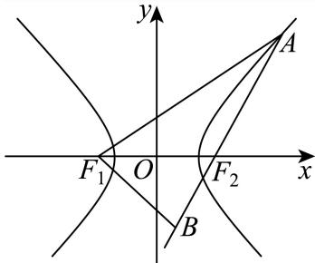
双曲线 的渐近线是（ ）。
A.
B.
C.
D.
A
令双曲线方程右侧为 ，得到渐近线 ，即 ，选 A。
已知双曲线的方程为 ，则（ ）。
A. 渐近线与 无关；
B. 实轴长与 无关；
C. 焦距与 无关；
D. 焦点与 无关。
A
当 时标准式为 ；当 时为 。
两种情况渐近线均为 ，与参数无关；实轴长、焦距及焦点坐标都随参数变化。
因此选 A。
已知双曲线 的离心率为 ，则该双曲线的渐近线方程为______。
y = ±x
根据离心率公式和双曲线的 c的关系进行求解由题知： 双曲线的渐近线方程为y = ±x
故答案为y = ±x
本题考查双曲线渐近线的求法，解题时要熟练掌握双曲线的简单性质
已知双曲线 的左、右焦点分别为 ，点 是其左顶点，点 是双曲线上一点，且位于第一象限，若双曲线 的离心率 ，。
（1）求双曲线 的方程；
（2）若三角形 是等腰三角形，求点 的坐标；
（3）直线 不垂直于 轴，且与曲线 的另一个交点为 ，若 是锐角，求直线 的斜率的取值范围。
P (4, 6)或
（1）离心率 ，，所以 ，得 。方程为 。
（2），设 ，。
若 ，则 ，不合要求。
若 ，联立 与 ，得 。
若 ，联立 ，得
（3）设割线为 ，两交点横坐标为 。
因有两个交点，；代入双曲线得 其判别式 。
由韦达定理，，。
锐角条件为 所以 或 。
此外，直线必须经过第一象限的右支点：右支斜率函数 在 为负，在 大于 ，故 或 。
综合得到 校订：恢复原解析离心率等式为2，并修正数量积不等式中误写的方向。

若双曲线 经过点 ，则此双曲线的离心率为______。
代入点坐标，得 ，所以 。于是 ，离心率 。
双曲线 的左、右焦点分别为 和 ，若以点 为焦点的抛物线 与 在第一象限交于点 ，且 ，则 的离心率为______。
设双曲线焦点为 。
抛物线焦点为 ，所以 。
由 且 在第一象限，知 。
联立得 ，所以 。
于是 。
双曲线定义给出 ，故 。

已知双曲线 ，过点 作不垂直于 轴的直线 交双曲线 于 两点。
（1）求双曲线离心率；
（2）若点 ，点 在双曲线的右支上，且 是 的中点，求直线 的斜率；
（3）若 ， 分别是双曲线 的左右焦点， 是 关于 轴的对称点，若存在直线 使得 ，求 的取值范围。
。
。
。
（1），故离心率 。
（2） 为 中点，故 。代入双曲线得 。由 在右支，取 ，故
（3）斜率为0时两相关向量共线且非零，不满足。
斜率非零时设 ，其中 （题设排除竖直线），。
联立得 有两个交点要求 且 ，并有 ，。
由 ，数量积为零等价于 代入韦达关系，得 。
判别式条件化为 ；结合 ，得 。
再由 ，得 。
这些条件下可取非零 ，两交点和垂直条件均成立，故

已知双曲线 ，左右顶点分别为 ，过点 的直线 交双曲线 于 两点。
（1）（3 分）若离心率 时，求 的值；
（2）（5 分）若 ， 为等腰三角形，且点 在第一象限，求点 的坐标；
（3）（10 分）连接 并延长，交双曲线 于点 ，若 ，求 的取值范围。
（1），所以 ，。
（2）此时双曲线为 。
，。
若 ，则 ，不在第一象限；若 ，第一象限支上 ，故 ，矛盾。
只能 ，联立 并取 ，得 。
（3）水平直线所得内积为 ，排除。
设 ，交点为 ，则 。
联立得 要求 ，此时判别式 ，故 内积为 化为 ，代入整理得 。
故 ，且 等价于 。
结合 ，得
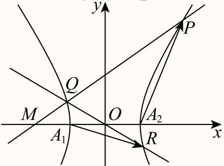
设 为圆 上的动点， 是圆 的切线，且 ，则点 的轨迹方程是______。
半径 垂直切线 ，故 。反之，圆心距为 的任意点在圆外，其切线长均为1。因此轨迹恰为 。
已知圆 的一般方程为 ，则圆 的半径为______。
配方得 ，圆心为 ，半径为 。
如图，椭圆 的离心率分别为 ，双曲线 的离心率分别为 ，则下列结论正确的是（ ）。

A.
B.
C.
D.
D
椭圆的离心率为 。
图中 长半轴相同，而 短半轴较大，故 。
双曲线的离心率为 。
从图中实轴与共轭半轴的相对尺度可见， 的 大于 ，故 。
综上 ，选D。
已知 ，曲线 、 的方程分别为 和 ， 与 在第一象限内相交于点 。

（1）若 ，求 的值；
（2）若 ，定点 的坐标为 ，动点 在直线 上，动点 在曲线 上，求 的最小值；
（3）已知点 ， 在曲线 上，点 关于直线 的对称点分别为 ，设 的最大值为 ， 的最大值为 ，若 ，求实数 的取值范围。
（1）；（2）；（3）。
（1）联立 与 ，非原点交点为 。所以 ，得 。
（2）两曲线互为反函数图像，关于直线 对称。
设 关于 的对称点为 ，则 ，且 在对称轴上，故 。
于是 ，等号要求 在线段 上。
时，设 ，则 当 、 时取得等号；此时 与 在 两侧，线段 与 相交，存在符合题意的 。
故最小值为 。
（3）设 、，其对称点为 、，其中 ，故 。
当 时取得最大值 。
另一方面， 因为 ，此式随 严格递增，故 时取得最大值 。
于是 。
令 ，条件 等价于 即 。
平方得


已知抛物线 （）的焦点为 ，准线为 。

（1）若点 在抛物线 上，求 所在直线的斜率。
（2）若准线 ，点 为抛物线 准线 上的一个动点，过点 作圆 的两条切线，切点分别为 。若两条切线 与 轴分别交于点 ，求 的最小值。
（3）若点 到准线 的距离为 ，过抛物线 的准线 上一点 作圆 （）的两条切线 ，且 分别与 交于 两点和 两点。问：是否存在某个圆 ，使得当点 运动时， 为定值？若存在，求出该定值；若不存在，请说明理由。
（1）；（2）；（3）存在，圆为 ，在题设四个交点存在时定值为 。
（1）由 得 ，焦点 ，所以 。
（2）圆为 。
设 ，切线 。
由圆心到直线距离为1，得 。
其两根 对应两条切线，且在y轴截距为 ，所以 等号在 时成立。
（3）仍有 ，准线 。
设 ，圆心 ，切线 的斜率满足 故两根 的和、积分别为 、。
在题设两条切线均与抛物线交于两个不同点的范围内，（所以 ）。
将 代入切线，得 ，因此 取 ，该式恒等于16，故存在所需圆 。
此时确有满足两条割线条件的动点范围（例如 附近），所以定值不是空条件。
校订说明：补回韦达和积缺失分式、模长根号括号，并明确排除水平切线只能与抛物线交一点的退化位置。
已知抛物线 的焦点为 ，准线为 ，点 为抛物线上一动点，点 为坐标原点。
（1）若 ，求点 的坐标。
（2）若直线 与抛物线 只有一个交点，求直线 的方程。
（3）若 ，过点 作圆 的两条切线，交准线 于 两点，求 的取值范围。
或 。
和 。
。
（1）焦点为 。由 得 ，故 ，再由 得 。
（2）联立得 。
若 ，仅有交点 ，得 ；若 ，唯一交点要求判别式 ，得 。
因此直线为 或 。
（3）设 ，。
竖直线 不与圆相切，因此两条切线均有斜率。
设切线 ，由圆心 到切线的距离为2，得 设两根为 。
准线为 ，相应交点纵坐标为 。
故 令 ，则 ，它随 连续递减，从 趋于4而不取4，所以范围为 。
设 为实数， 是以点 为顶点，以点 为焦点的抛物线， 是以点 为圆心、半径为1的圆位于 轴右侧且在直线 下方的部分。

（1）求 与 的方程；
（2）若直线 被 所截得的线段的中点在 上，求 的值；
（3）是否存在 ，满足： 在 的上方，且 有两条不同的切线被 所截得的线段长相等？若存在，求出 的取值范围；若不存在，请说明理由。
（1），；（2）；（3）存在，。
（1）设 。
焦点纵坐标 ，所以 ，。
由圆心、半径与弧的位置，。
（2）联立 与 得 ，两交点横坐标和为 。
故弦中点 。
代入圆弧得 ，且 ，所以 。
（3）圆弧在抛物线上方，等价于在 上 。
右端最大值为 ，故 。
圆弧切线斜率 ，设切线为 。
圆心到切线距离为 ，且切线在圆心下方，故 。
联立切线与抛物线得 。
若弦端点为 ，则 令 ，得 。
这里仅取 的非退化弦，且 、。
若二次式在 上恒非负， 严格递增，不存在等长的两条不同弦。
其顶点为 ，最小值为 。
故必须 。
反之，若 ， 在 上有负值且最终为正。
若极小值非负，其两侧可取相同正函数值；若极小值为负，则在从 下降的分支与最终上升分支上也可取相同正函数值。
因此存在两条不同的非退化等长弦。
综上，所求范围为 。
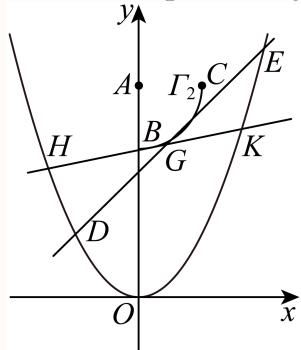
如图所示，已知抛物线 ，点 是抛物线上的四个点，其中 在第一象限， 在第四象限，满足 ，线段 与 交于点 。记线段 与 的中点分别为 。
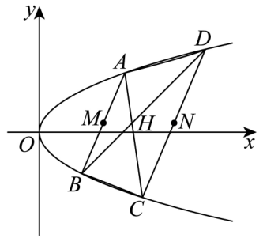
（1）求抛物线 的焦点坐标。
（2）求证：点 三点共线。
（3）若 ，求四边形 的面积。
（1）；（2）证明见解析；（3）。
（1）由 得 ，焦点为 。
（2）设 的纵坐标为 ， 的纵坐标为 ，其中 且 。
抛物线上两点连线满足 ，两弦平行使两组纵坐标之和相同，故上述设法不失一般性。
由中点公式， 将 代入 及 的方程，都得到 ，故 。
三点纵坐标相同，因而共线。
（3）由上述坐标，，。
条件给出 、，从而 。
两条平行边的长度分别为 和 ，其所在直线的距离为 。
于是
已知抛物线 上有一点 到准线的距离为 9，那么点 到 轴的距离为______。
4√2
根据抛物线的定义知 ，将其再代入抛物线方程即可.
由 知抛物线的准线方程为x = -1，设点 ，由题意得 ，解得 代入抛物线方程 ，得 ，解得
则点P到x轴的距离为
故答案为：
已知焦点为 的抛物线 上有两点 和 ，且 ， 为 和 的中点，过点 作 的准线的垂线，垂足为 ，则 的最小值为______。
设 。
由抛物线定义以及中点到准线的距离关系，。
由余弦定理 因此 。
当 ，选取关于抛物线轴对称并使焦点夹角为 的两点时等号成立，故最小值为 。
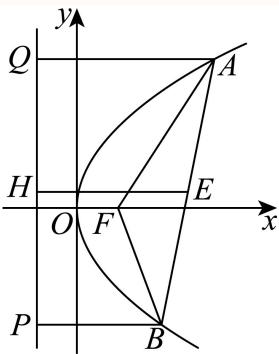
已知点 为抛物线 上一点，若点 到 的焦点的距离是 到 轴的距离的两倍，则点 的横坐标是______。
1
设 ，根据条件，利用抛物线的定义得 即可求解.
因为抛物线Γ: 的焦点为F(1,0)，准线方程为x = −1，设 由题有 ，解得
故答案为：1.
点 为抛物线 的焦点， 为 上一点，若 的面积为 （ 为坐标原点），则 ______。
6
焦点为 ，准线为 。
三角形面积 得 ，故 。
由抛物线定义 。

如图的封闭图形的边缘由抛物线 和垂直于抛物线对称轴的线段 组成。已知 ，抛物线的顶点到线段 所在直线的距离为2。

（1）请用数学符号语言表达这个封闭图形的边缘；
（2）在该封闭图形上截取一个矩形 ，其中点 在线段 上，点 在抛物线 上。求以矩形 为侧面， 为母线的圆柱的体积最大值；
（3）求证：抛物线 的任何两条相互垂直的切线的交点都在同一条直线上。
（1）边界方程见解析。（2）。（3）交点均在 上。
（1）以抛物线顶点为原点、对称轴为 轴，取 在上方。
设 ，由 得 。
边缘是抛物线弧 与线段 的并集。
（2）设 ，其中 ，则矩形宽 、高 。
以 为母线卷成圆柱，有 ，所以 故当 时体积最大，为 。
（3）抛物线在横坐标 处切线为 。
两切线垂直，故 ，且 。
两式联立得交点横坐标 ，纵坐标 。
所以所有这类交点都在定直线 上。
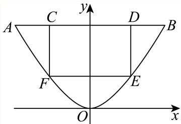
等腰 的三个顶点均在椭圆 上，且 中有且仅有两个点是椭圆 的顶点，则满足条件的 共有______个。
20
记长轴顶点为 、，短轴顶点为 、。按恰选的两个顶点分类。
①一长轴顶点和一短轴顶点：共有4对。
以这两点的连线为底边，其垂直平分线与椭圆交于2个非顶点，得到2个三角形。
以短轴顶点为顶角，设第三点为 ，以 为例，由 与椭圆方程得 或 ；前者对应长轴顶点，排除，后者对应2个非顶点。
以长轴顶点为顶角时，除已有短轴顶点外另一代数根横坐标绝对值为 ，不在椭圆上。
这三类无重复，故每对4个，共16个。
②两个短轴顶点：以 为底边时第三点只能是长轴顶点，排除；以 或 为顶角时分别得 或 ，各有2个非顶点，共4个。
③两个长轴顶点：以它们为底边时第三点为短轴顶点，排除；以其中一个为顶角时腰长为椭圆最大弦长 ，只能到另一个长轴顶点，不能组成所需三角形。
综上共有 个。
已知椭圆 （）的左、右焦点分别为 ， 为 上两个不同的点，记 的周长和面积分别为 和 。
（1）若 的离心率为 ，求 的值。
（2）若满足 的点 有且仅有两个，求 的取值范围。
（3）若 ，是否存在点 使得 和 同时取到最大值？若存在，求出直线 的方程；若不存在，说明理由。
(8, 12)
不存在，理由见解析.
（1），所以 ，得 。
（2）焦点距离范围为 。恰有两点的条件为 ，故 。
（3）此时椭圆为 ，焦点 、。
由椭圆定义和三角不等式， 等号要求弦 经过 ，且 在弦内。
设非水平弦为 ，联立椭圆可得 若周长最大，则 。
令 ，有 ；水平过 的弦在x轴上，面积为0，同样不超过该界。
但取弦 ，即 ，它与椭圆有两个不同交点，且 因此任何周长最大三角形都不可能使面积同时最大，所求点不存在。
已知椭圆 ，双曲线 ，其中 ，点 为椭圆 的两个焦点，点 是双曲线 上一动点。若双曲线 的两条渐近线夹角的余弦值等于 ，则使得 为直角三角形的点 有（ ）个。
A. B. C. D.
C
令渐近线倾斜角为 ，则 ，。
由 得 ，椭圆半焦距 ，故 、。
双曲线为 。
若直角在 ，则 ，联立得 ，共2点。
若直角在 ，则 ，得 ，共2点；若直角在 ，同理共2点。
这6点互不相同，故选C。
设 为椭圆 上一动点， 分别为圆 和圆 上的动点，则 不可能为（ ）。
A. B. C. D.
D
由题可得两个圆心恰好是椭圆的焦点，结合椭圆的定义，再根据圆外一点到圆上点的距离最小值为点到圆心距离减半径，圆外一点到圆上点的距离最大值为点到圆心距离加半径，求出 的取值范围，即可得到答案
椭圆的两个焦点坐标为 ，恰好为两个圆的圆心坐标，
圆 的半径 ，圆 半径
由椭圆的定义可得
当椭圆上动点P与焦点连线与圆相交于M,N时， 最小，最小值为
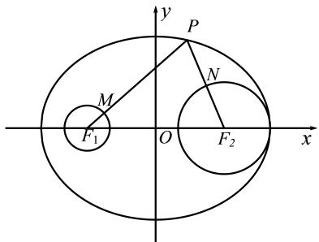
当椭圆上动点P与焦点连线的反向延长线与圆相交于M,N时， 最大，最大值为
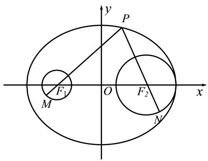
所以7
故选：D.
已知椭圆 （）的焦距为 ，离心率为 ，过点 的直线交椭圆于点 。
（1）求 的方程。
（2）记 的面积为 ，求证：。
（3）求 的最大值与最小值，并写出取最大值与最小值时直线 的方程。
证明见解析
(3)最大值8，直线方程y =1；最小值2，直线方程
由椭圆关系 ，因此椭圆Γ的方程为：
(2)设 ，因为P(2,1), O(0,0)，所以直线 即
所以点A到直线OP的距离 ，又
所以
由A在椭圆上得 ，所以可设
因此 得证.
代入椭圆方程整理得：
由参数t的几何意义得
结合韦达定理得：
斜率存在时，设斜率为 ，化简得
由 得：当k =0时， 取得最大值8，对应直线方程为
当直线斜率不存在时，直线为 ，此时 ，为最小值.

综上， 的最大值为8，对应直线方程为y=1；最小值为2，对应直线方程为
已知椭圆 ，点 为坐标原点，椭圆的右顶点为 ，左右焦点分别为 ，点 为椭圆在 轴上方的一动点。
（1）求椭圆 的焦距与 的周长。
（2）若 ，求点 到 轴的距离。
（3）过点 作斜率为 的直线 交 轴正半轴于点 ，点 位于椭圆内。直线 与椭圆 交于 两点，记 的面积分别为 ，求 的取值范围。
焦距为2, 的周长8;
（1），所以焦距为2，焦点三角形周长为 。
（2）设 。
代入数量积与椭圆方程得 ，即 。
两根为 ，后者在椭圆外，故 ，到横轴距离为 。
（3）令 ，则 ，点P的条件为 。
联立椭圆得 ，因此 由面积行列式，，，所以比值为 。
令 ，根号内函数 的导数为 故比值严格递增； 时趋于 ， 时趋于6，均不取端点。
所求范围为 。

椭圆具有如下光学性质：如图，， 分别是椭圆 的左、右焦点，从点 发出的光线在到达椭圆上的点 后，经过到达点的切线反射后经过点 ，有以下两个命题：

① 若 是椭圆上除长轴端点外的一点，设法线与 轴的交点为 ，则 ；
② 若从 发出的光线，经椭圆两次反射后，第一次回到 ，所经过的路程为 ，则该椭圆的离心率为 。
则以下说法正确的是（ ）。
A. ①是真命题，②是真命题
B. ①是真命题，②是假命题
C. ①是假命题，②是真命题
D. ①是假命题，②是假命题
A
① 设 ，由隐函数求导，椭圆切线斜率 。
当 时，法线与 轴交于 ，由垂直关系 得 。
当 时法线为 ，同样 。
由于排除长轴端点，，所以 ，①为真。
② 设两次反射点为 ，光路为 ，总路程为 。
故 ，，②为真。
选 A。
已知椭圆 。
（1）若 ，求椭圆 的离心率；
（2）设 为椭圆 的左右顶点，椭圆 上一点 的纵坐标为 1，且 ，求实数 的值；
（3）过椭圆 上一点 作斜率为 的直线 ，若直线 与双曲线 有且仅有一个公共点，求实数 的取值范围。
（1） 时 ，所以 。
（2）两顶点为 。设 ，则椭圆方程给出 。题设内积为 ，所以 ，由 得 。
（3）设直线为 。
它与椭圆相交或相切当且仅当 。
与双曲线联立得 相切要求二次项非零且判别式为零，故 、。
于是 且 。
结合题设 ，得 。
到点 、 距离之和为10的动点 的轨迹方程为______。
根据给定条件，利用椭圆的定义求出轨迹方程.
依题意，
则点P的轨迹是以 为左右焦点，长轴长2a = 10的椭圆，
由 ，得
所以动点P的轨迹方程为
故答案为：
已知椭圆 的左、右焦点分别为 ，右顶点为 ，上顶点为 ，设 为 上的一点。
（1）当 时，求 的值；
（2）若 点坐标为 ，则在 上是否存在点 使 的面积为 ，若存在，请求出所有满足条件的点 的坐标；若不存在，请说明理由；
（3）已知 点坐标为 ，过点 和点 的直线 与椭圆 交于另一点 ，当直线 与 轴和 轴均不平行时，有 ，求实数 的取值范围。
(2)存在；Q(0,−1)或
（1）由椭圆方程知 。
给出 ，代入椭圆得 。
因此 。
（2），，。
面积条件要求 到 的距离为 。
直线 为 。
设 所在平行线为 ，则 故 或 。
当 时，与椭圆联立得 ，从而 或 。
当 时，联立得 ，判别式为 ，无交点。
因此所求两点恰为上述两点。
（3）设 ，其中 ，交点为 。
联立得 所以 ，。
设 中点为 ，向量条件等价于 ，也即 。
因 ，有 除以非零的 得 ，代入根和、再除以 ，得 结合判别式条件，，得 。
反之此区间内可取 ，满足交点及向量条件，故所求范围为 。


中国探月工程又称“嫦娥工程”，是中国航天活动的第三个里程碑。在探月过程中，月球探测器需要进行变轨，即从一条椭圆轨道变到另一条不同的椭圆轨道上。若变轨前后的两条椭圆轨道均以月球中心为一个焦点，变轨后椭圆轨道上的点与月球中心的距离最小值保持不变，而距离最大值扩大为变轨前的 倍，椭圆轨道的离心率扩大为变轨前的 倍，则变轨前的椭圆轨道的离心率为______（精确到 ）。
0.31
设变轨前参数为 ，变轨后为 。
距离条件给出 ，，所以 。
令 ，离心率比例给出 ，化简为 。
合法正根为 。
已知椭圆 与椭圆 相交于 四点，且与 和 的四个焦点在同一个圆上，则 ______。
四个焦点关于两坐标轴对称，故所求圆以原点为圆心。两个椭圆的半焦距相等，有 ，所以 ，圆方程为 。
交点同时满足 及 ，得 。代入第二椭圆： 整理得 。由 ，得 。
已知椭圆 经过点 ，离心率为 。过点 ， 的动直线 交椭圆 于 两点。
（1）求椭圆 的方程；
（2）若直线 与 相切，求当 时， 的长；
（3）若以 为直径的圆经过 轴上方的定点 ，求点 的坐标。
（1）；（2）；（3），定点为 。
（1）由 及 得 ，故椭圆为 。
（2）设 。直线与圆相切给出 ，故 。与椭圆联立得 ，由两根之差及弦长公式
（3）设定点 ，，直线 。
与椭圆联立，横坐标满足 。
将韦达关系代入 ，整理得 该式对所有可取斜率成立，故各项系数为零。
由 得 ，再由 得 ，常数项给出 ，取 。
因此当且仅当 时有上述定点，且 。
竖直弦的直径圆也经过此点，结论完整。


在平面直角坐标系中，已知曲线 ，点 分别为 上不同的两点，。
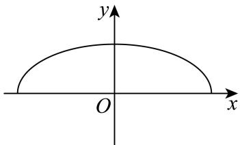
（1）求 所在椭圆的离心率；
（2）若 ， 在 轴上，若 到直线 的距离为 ，求 的坐标；
（3）是否存在 ，使得 是以 为直角顶点的等腰直角三角形？若存在，求 的取值范围；若不存在，请说明理由。
（1）；（2）；（3）。
（1），故离心率 。
（2）。
设直线 ，由点 到该直线的距离为 ，得 ，解得斜率为 或 。
再与椭圆联立求另一交点。
前者给出 ；后者给出 ，不满足 ，舍去。
所以 。
（3）设 ，直线 。
等腰直角三角形的顶点 在 的垂直平分线上。
记 ，联立椭圆得 故 、；进而 由 得 。
由 ，整理得 因此 ，且 各 均对应合法弦，故 。
例如端点 可取 ；另一个端点由对称性得到。
校订说明：原解析将 误换成严格不等式，漏掉两个可取端点。
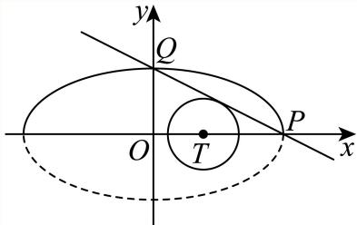
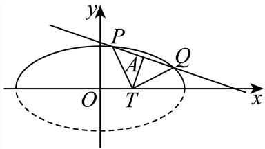
设椭圆 的左顶点为 。
（1）求 的离心率；
（2）设 的左焦点为 ，上顶点为 ，若点 在 上且位于 轴右侧，，求点 的横坐标；
（3）设直线 ， 与 交于不同的两点 和 ，若点 在以 为直径的圆外，求实数 的取值范围。
3
（1），所以 。
（2），故 的斜率为 。
方程为 ，与椭圆联立得 ，取正根得到 。
（3）设交点纵坐标为 。
联立 得 ，有两个不同交点要求 。
由韦达定理 。
在直径 的圆外等价于 化简得 。
结合 ，得
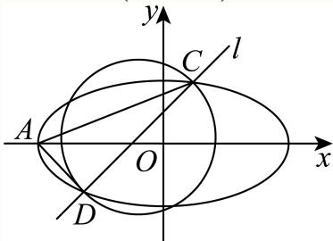
在平面直角坐标系 中，已知点 为椭圆 上一点， 分别为椭圆的左、右焦点。
（1）若点 的横坐标为 2，求 的长；
（2）设 的上、下顶点分别为 ，记 的面积为 ， 的面积为 ，若 ，求 的取值范围；
（3）若点 在 轴上方，设直线 与 交于点 ，与 轴交于点 ， 延长线与 交于点 ，是否存在 轴上方的点 ，使得 成立？若存在，请求出点 的坐标；若不存在，请说明理由。
（1）；（2）；（3）存在，。
（1） 在椭圆上，故 ，，于是 。
（2）设 且 。
两面积为 ，条件给出 。
结合 ，得 ，从而 右端点由 可以取到。
（3）设 ，。
由对称性 。
题设向量和成比例，给出 与 平行，故 。
设 ，联立椭圆得 。
韦达定理给出 由 解得 ，所以 。
于是存在 ，代回向量条件成立。
校订说明：原解析第（2）问漏掉可取的右端点，区间应右闭。


在平面直角坐标系中，点 到直线 的距离为______。
根据点到直线的距离公式求解即可.
根据点到直线的距离公式可得
故答案为：
若直线 与直线 平行，则实数 的值为______。
-2
已知直线 与直线3x − y = 0平行，
∴两直线斜率相等，即1 − a = 3，解得a = −2,
∵直线(a − 1)x + y − 1 = 0的截距为1，直线3x − y = 0的截距为0，不相等，
求直线 与直线 的夹角为______。
先求出直线的斜率，可得它们的倾斜角，从而求出两条直线的夹角.
解：·∵直线x=-2的斜率不存在，倾斜角为
直线 0的斜率为 倾斜角为
故直线 直线 的夹角为
故答案为：
直线 的倾斜角大小为______。
45°
[分析]：把已知直线的方程变形后，找出直线的斜率，根据直线斜率与倾斜角的关系，即直线的斜率等于倾斜角的正切值，得到倾斜角的正切值，由倾斜角的范围，利用特殊角的三角函数值即可求出倾斜角的度数.
由直线x − y + 1 = 0变形得：y = x + 1
所以该直线的斜率 k =1,
设直线的倾斜角为 α，即 tan α = 1,
∵α∈[0,180°),
故答案为：45°.
在平面直角坐标系 中，对于定点 ，记点集 中距离原点 最近的点为点 ，此最近距离为 。当点 在曲线 上运动时，关于下列结论：
① 点 的轨迹是一个圆；
② 的取值范围是 。
正确的判断是（ ）。
A. ①成立，②成立
B. ①成立，②不成立
C. ①不成立，②成立
D. ①不成立，②不成立
C
满足 ，故 。
最近点的坐标为 。
当 时，其轨迹是圆 在 的部分；当 时，其轨迹为 。
所以整体轨迹不是圆，①错误。
令 。
圆弧部分到原点距离介于 和 之间，且两个径向取等点均在 ，都能取到。
线段部分到原点的距离也在此范围内，因为 ，。
轨迹连通，距离连续，故值域恰为 。
②正确，选C。
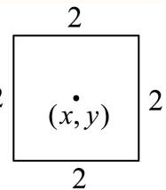
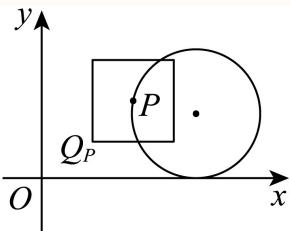
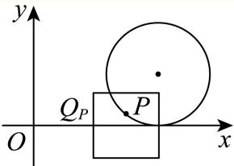
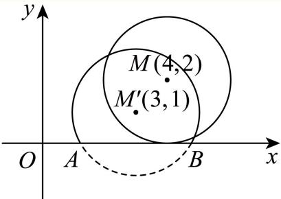